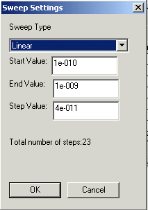
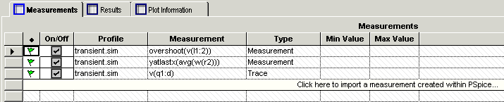

|
|
|||||||||
|
|
|
|
|
|
|
|
|
|
|
|
|
Parametric Plotter is available only if you have PSpice1 Advanced Analysis license. |
The Parametric Plotter added to Advanced Analysis provides you with the functionality of sweeping multiple parameters. Once you have created and simulated a circuit, you can use the Parametric Plotter to perform this analysis.
The Parametric Plotter gives users the flexibility of sweeping multiple parameters. It also provides a nice and an efficient way to analyze sweep results. Using Parametric Plotter, you can sweep any number of design and model parameters (in any combinations) and view results in PPlot/Probe in tabular or plot form.
Using the Parametric Plotter, you can:

|
From the PSpice menu in design entry tool, select Advanced Analysis > Parametric Plot. |
The Parametric Plotter window appears.
|
|
From the Start menu, choose Programs > OrCAD 16.X > PSpice Advanced Analysis. |
|
|
Open the .aap file. |
The Parametric Plotter window appears.
You can now use the Parametric Plotter to analyze your circuit. Using Parametric Plotter is a two steps process.
|
|
In the first step, you select the parameters to be swept and also specify the sweep type. See "Sweep Types" . |
|
|
In the second step, you specify the measurements to evaluated at each sweep. See "Specifying measurements" . |
After you have identified the sweep parameters and specified measurements, run the sweep analysis and view the results in the Results tab or the Plot Information tab of the Measurements window.
Advanced Analysis Parametric Plotter is used to perform the sweep analysis. When you run a sweep analysis, you evaluate the results of sweeping one or more parameter values, on the circuit output.
During the sweep analysis, the parameters values are varied as per the user specifications. There are four possible ways in which you can vary the parameter values. These are:
For discrete sweep, you need to specify the actual parameter values to be used during the simulation runs. The parameter values are used in the order they are specified.
You can specify the values of variable parameters as 10, 100, 340, and so on.
For Linear sweep, specify the Start, End, and Step values. For each run of the parametric plotter, the parameter value is increased by the step value. In other words, the parameter values used during the simulation runs is calculated as Start Value + Step Value. This cycle continues till the parameter value is either greater than or equal to the End Value.
If for a parameter you specify the start value as 1, End value as 2.5, and the step value as 0.5, the parameter values used by the Parametric Plotter are 1, 1.5, 2, and 2.5.
In the logarithmic octave sweep, the parameters are varied as a function of ln(2).
For Logarithmic Octave sweep, you need to specify the Start Value, End Value, and number of points per Octave.
Number of points per Octave is number of points between the start value and two times start value. For example, if the start value is 10, number of points per Octave is 5, this implies that for sweep analysis, the Parametric Plotter will pick up 5 value between 10 and 20, with 20 being the fifth value.
During the analysis the parameter value in increased by a factor that is calculated using the following equation:
factor = exp[(ln(2)/N]
N |
Consider that the sweep type for a parameter is LogarithmicOct. The start value, end value and the number of points per Octave are specified as 10, 30, and 2, respectively.
The values used by the Parametric Plotter for LogarithmicOct sweep type will be 10, 14.142, 20, 28.284, and 40.
In this example, the difference between start and end values is more than an octave, therefore, the actual number of values used by the Parametric Plotter is more than 2.
If the sweep type is LogarithmicDec, the parameter values are varied as a function of ln(10). For Logarithmic decimal sweep, you need to specify the Start Value, End Value, and number of points per decade.
Number of points per decade is number of points between the start value and 10 times start value. For example, if the start value is 10, number of points per decade is 5, this implies that for sweep analysis, the Parametric Plotter will pick up 5 value between 10 and 100, with 100 being the fifth value.
During the analysis the parameter value in increased by a factor, which is calculated using the following equation:
factor = exp[(ln(10)/N]
N |
If you specify the start value as 10, end value as 100, and number of points per decade as 5, the parameter values used for sweep analysis will be 10, 15.8489, 25.1189, 39.8107, 63.0957, and 100.
In the Sweep Parameters window, add the parameters values that you want to vary during the sweep analysis.
|
|
In the Sweep Parameters window, click the Click here to import a parameter from the design property map row. |
The Parameter Selection dialog box appears with a list of components and the parameters for which you can sweep the parameter values.
Only the component parameters that have been defined in the schematic, appear in the Parameter Selection dialog box.
|
|
For the parameter that you want to vary, specify the Sweep Type. |
|
|
In the Parameter Selection dialog box, click the Sweep Type grid. |
|
|
From the drop-down list, select the sweep type as Discrete, Linear, LogarithmicDec, or LogarithmicOct. |
Note: Sweep type defines the method used by the Parametric Plotter to calculate variable parameter values. To know more about the sweep types, see "Sweep Types" .
|
|
To specify the sweep values for the selected parameter, click the Sweep Values grid. |
The Sweep Settings dialog box appears.

|
|
In the Sweep Settings dialog box, the sweep type you selected in the previous step appears in the Sweep Type drop-down list box. Specify the parameter values that would be used for each parameter during sweep analysis. |
To know more about the sweep types and sweep values to be specified, see Sweep Types
The selected parameters get added in the sweep parameter window. When you add the parameters, a Sweep Variable is automatically assigned to each of the parameters.

The value of the sweep variable is an indication of how parameters will be varied during sweep analysis. Sweep Variables values are assigned in the order in which sweep parameters are defined. If required, you can change these values. While modifying the values of Sweep Variable, ensure that each parameter has a unique value of sweep variable attached to it. Also the values should follow the sequence. For example, if you select three parameters to be varied during the sweep analysis, the sweep variables should have values as outer, inner1, and inner2. You cannot have random values such as inner1, inner2, and inner4.
For the sweep analysis, the values of parameters is varied in nested loops. For example, if you select two variables, the outer variable is fixed for the analysis, while the inner variable goes through all of its possible values. The outer variable is then incremented to its next value, and the inner variable again cycles through all of its possible values. This process is continued for all possible values of the outer variable.
The result for each run of the analyzer appears in the Results pane. By default, the results are displayed in the order described above.
|
|

|
Similar process is followed in case multiple (more than two) parameter values need to be varied. |
For example, in Figure 7-11 , for constant values of r7 and r6, the value of r4 will be varied. The values of r7 and r6 will not change till r4 has been assigned all possible values within the range specified by the user. After r4 completes a cycle, the value of r6 will be increased, and r4 will again be varied for all possible values.
Parametric Plotter is used for evaluating the influence of changing parameter values on an expression and on a trace. A measurement can be defined as an expression that evaluates to a single value, where a trace is an expression that evaluates to a curve.
You can either add a measurement expression that was created in PSpice A/D or can even create a new measurement in PSpice Advanced Analysis.
|
|
In the Measurements tab, click the Click here to import a measurement created in PSpice row. |
The Import Measurements dialog box appears. This dialog box lists only the measurements that you created in PSpice A/D.
|
|
Select the measurement that you want to be evaluated and click OK. |
Selected measurement gets added in the Measurements tab.
|
|
|
Only the measurements that are listed in the Measurements Results window of PSpice A/D are available in the Import Measurements dialog box. |
|
|
In the Measurements tab, right-click and select Create New Measurements. |
The New Measurement dialog box appears.
|
|
For a two-pin device, the New Measurement dialog box in Advanced Analysis will show the current through the device and not through the pins. For example, for a diode D, it will only show I(D) and not I(D:1) or I(D:2). |
|
|
From the Profile drop-down list, select the simulation profile for which you want to create the measurement. |
|
|
From the Measurements drop-down list, select the Measurement that you want to evaluate. |
|
|
From the Simulation Output Variables list specify the variable on which the measurement is to be performed and click OK |
The new measurement gets added to the Measurements tab.
|
|

|
Using the New Measurements dialog box, you can only add the already defined measurements to the Parametric Plotter window. To define new measurements in PSpice use the Trace > Measurements command in PSpice A/D. |
Using the Parametric Plotter, you can evaluate the influence of changing parameter values on a trace. To be able to do this, you need to add a trace in the Measurements tab.
|
|
From the Analysis drop-down menu, select Parametric Plotter > Create New Trace. |
Alternatively, right-click on the Measurements tab and select Create New Trace.
The New Trace Expression dialog box appears.
The trace expression gets added in the Measurement window, with type as Trace.
After you have specified the measurements and the list of variable parameters, run the Parametric Plotter.
Note: Alternatively, click the Run button on the toolbar or press <CTRL>+<R> keys.
For optimized performance of Parametric Plotter, maximum number of parametric sweeps supported in one session is 1000. If for your selection of parameters and measurements, the total number of sweeps required is greater than 1000, an error message is displayed in the Output Window, and analysis stops. As the simulation progresses, the Output Window also shows the profile selected and the number of sweep run being executed.
|
|
|
The Number of parametric sweeps required, which is displayed in the Output window, should be interpretted as the number of sweeps required per profile. The total number of sweeps required is calculated separately for each profile. |
The results of the parametric sweep analysis are displayed in form of a spread sheet in the Results tab of the Measurement window. For the same results, you can define plot information using the Plot Information tab. The plot information is displayed in the PSpice Probe window.
The results tab displays the simulation result for each run of the Parametric Plotter. Each run of the parametric plotter is indicated by a row in the Results tab. Therefore, if for the complete analysis Parametric plotter completes 100 runs, there will be 100 rows in the results tab.
The number of columns in the results tab is equal to the number of variable parameters and the number of measurements or the traces to be evaluated. There is one column each for a variable parameter and measurement expression to be evaluated.
In case of traces, instead of the measurement value, a trace is generated for each run of Parametric Plotter. As traces cannot displayed on the Results tab, therefore, instead of each trace a yellow colored bitmap is visible. To view the complete trace, double-click the yellow colored bitmap in the Results pane. The trace gets displayed in the PSpice Probe window.

You can set up the Parametric Plotter to display data in a number of ways.
You can sort the results of the sweep analysis according to the values in any column.
For example, if you want to view the result of keep r4 to a constant value of 39, sort the values in the third column and view the results.
To sort the values displayed in a column, double-click on the column name. Once the contents of the column are sorted, subsequent click on the column name with toggle the order of sorting.
For example, after the Results pane is populated, double-clicking the column name arranges the values in ascending order. Now if you again double-click on the column name, the column contents willl get arranged in descending order.
While analyzing the simulation results, you can lock the values displayed in one column. Once you have locked the values of a column, the order in which the values are displayed in that column do not change. You can then sort the values in other columns.
For example, you can sort the values of r7 and lock the column. If you now sort the values of r6, the values will be sorted for fixed value of r7.
To lock the values displayed in a column, click the lock icon at the top of the column.
The Plot Information tab can be used to specify a plot that you want to view in the Probe window. Using the Plot Information tab, you can view multiple traces in one window. This is useful when you want to view the result of varying a parameter on the output.
At any given point of time, you can add a maximum of four plots.
|
|
From the Analysis menu select Parametric Plotter > Add New Plot. |
The Plot Wizard appears.
Note: Alternatively, right-click on the Plot Information tab and select Add Plot.
|
|
In the Select Profile page of the Plot Wizard, specify the simulation profile for which you want the profile to be created and click Next. |
|
|
In the select X-Axis Variable page of the wizard, specify the variable parameter that you want to plot on the X-axis of the plot. |
From the variables drop-down list you can select any of the sweep parameter or the measurements that you specified in the Measurements tab.
Besides the variable parameter and the measurements, the drop-down list has an extra entry, which is time or frequency.
When you select a transient profile, you can select Time as the X-Axis variable and plot out results against time. When you select a AC profile, you can select Frequency as the X-Axis variable.
|
|
In the Select Y-Axis Variable page, select the variable to be plotted in the Y-axis and click Next. |
Depending on your selection in the previous page of the Plot wizard, either the measurement expressions or traces appears in the Variables drop-down list.
When you select time or frequency as X-Axis Variable, all the traces added by you in the Measurements tab appear in the drop-down list. For all other selections of X-Axis Variables, the measurements added by you in the Measurements tab, are listed in the drop-down list.
|
|
In the Select Parameter page of the Plot Wizard, specify the parameter that will be varied for each trace to be plotted and click Next. |
|
|
In cases where there are more than two variable parameters, you need to specify a constant value for the variable parameters that are not covered in Step 3 or Step 6. |
Right-click on the parameter value and choose Lock.
The complete plot information gets added in the Plot Information tab.
|
|
From the Analysis drop-down menu, choose Parametric Plotter > Display Plot. |
Alternatively, right-click on the selected row and choose Display Plot.
The PSpice probe window appears with multiple traces.
In this section, you will use Parametric Plotter to evaluate a simple test circuit for inductive switching. This circuit is created using a power mosfet from the PWRMFET.OLB.
The design example is available at ..\tools\pspice\tutorial\capture\pspiceaa\snubber or ..\tools\pspice\tutorial\concept\pspiceaa\snubber for Capture and Design Entry HDL respectively.
Add two voltage markers added to the circuit as shown in Figure 7-13 , are used to plot the input and the output voltages.
To view the input and the output voltages, you first need to simulate the circuit.
The input and the output waveforms are displayed in Figure 7-13. The output waveform displays a spike at every falling edge of the input waveform.
Before users can use the output waveform, they need to adjust the circuit components so as to reduce the overshoot within the limit acceptable to the user. This can easily be done by increasing the values of resistor R3 and capacitor C1. But this results in increasing power dissipation across resistor R3.
Therefore, the design challange here is to balance the power dissipation and the voltage overshooot.
To find an acceptable soultion to the problem, we will vary the values of resistance R3, capacitor C1, and rise time of the input pulse and monitor the effect of varying the parameter values on the overshoot and the power dissipation across resistor R3.
To achieve this, use Parametric Plotter to run the sweep analysis. Before you can run the sweep analysis, complete the following sequence of steps.
om the PSpice menu in the design entry tool, select Advanced Analysis > Parametric Plot.
For the switching circuit design, we will vary trise linearly, specify discrete values for R3, and vary C1 logarithmically.
|
|
In the Sweep Parameters window, click the Click here to import a parameter from the design property map row. |
|
|
In the Sweep Parameters window, select the parameter named trise and click inside the corresponding Sweep Type grid. |
|
|
To specify the range within which the parameter values should be varied, click corresponding Sweep Values grid. |
|
|
In the Sweep Settings dialog box, specify start value as 5n, stop value as 12n and the step value as 1n. This implies that the rise time of the pulse will ve varied from 5 nano seconds to 12 nano seconds. |
|
|
To add resistor R3 as the next sweep parameter, click the sweep type grid corresponding to the component named R3. |
|
|
To specify the values of resitor R3, click corresponding Sweep Values grid. |
|
|
To specify a discrete value for resistor R3, click the New button and enter 5. |
|
|
Finally, to add capacitor C1 as a sweep parameter and vary the capacitance value, click the sweep type grid corresponding to capacitor C1 and select Linear from the drop-down list. |
|
|
In the Sweep Settings dialog box, specify theStart Value as .1n, End value as 1n, and number of points as 10, and click OK. |
This implies that the sweep analysis will be performed for 10 values of capacitance between .1 nano farads to 1 nano farads.
|
|
In the Select Sweep Parameters dialog box, click OK to save your changes. |
The changes are reflected in the Sweep Parameters window.
Besides the values entered by you in the Select Sweep Parameters dialog box, the Sweep Variable column also gets populated. Parametric Plotter assigns variables to the parameters depending on the order in which they are added. If required you can change this order.
To evalute the influence of varying parameter values on the overshoot and power disspipation across resistor R3, and to include a trace, add these three as the measurement expressions to be evaluated.
|
|
In the Measurements tab, select Click here to add a measurement created in PSpice row. |
|
|
In the Import Measurement(s) dialog box, select Overshoot(V(l1:2)), yatlastX(AVG(W(R2))), and v(q1:d) from the transient.sim profile. |
The measurements get added to the Measurements tab.

|
|
To run the sweep analysis, click the Start |
As Parametric Plotter starts running the Output window is populated with the total number of sweeps required to complete the analysis.
Once the analysis is over, the Min value and the Max Value columns are populated for each measurement specified in the Measurements tab. Besides this, results of each run of Parametric Plotter are displayed in the Results tab.

In the Results tab, you can sort and lock the results displayed in various columns. For example, consider that in case of the inductive switching circuit, your primary goal is to restrict the power loss, which is measured by yatlastx(avg(w(r2)), to less than 0.006, and then minimize the overshoot.
To achieve your goal, first sort the values displayed in the sixth column of Figure 7-15. To sort the values, double-click on the column heading. The values get assorted in the ascending order. Next you lock the sorted values. To lock the values, click the lock icon on the top of the column.
After sorting the power loss values, sort the values displayed in the fifth column of Figure 7-15. As a result of this sorting the values in the last column do not get disturbed. As a result, for all values of atlastx(avg(w(r2)), to less than 0.006, the overshoot values get sorted. Thus you can view the combination(s) of the parameter values for which both the outputs are in the desired range.
You can plot a trace between the X-axis and Y-axis variables for all values of a sweep parameter by using the Plot wizard. This wizard helps you specify the settings to plot a trace in the PSpice Probe window.
|
|
In the Plot Information tab, right-click in the plot information row and then click Add Plot. This displays the Plot wizard. |
|
|
Select the transient.sim profile, and click Next. |
|
|
Select r2::value as the variable to be plotted on the X-axis, and click Next. |

|
|
If you select a Parameter or Measurement variable to be plotted on the X-axis, you will only be allowed to select a "Measurement" variable to be plotted on the Y-axis. If you select Time/Frequency variable, the wizard will only display a list of available traces that can be plotted on the Y-axis. |
|
|
Select transient.sim::overshoot(v[l1:2]) as the variable to be plotted on the Y-axis, and click Next. |
|
|
Select c1::value as the parameter to be varied, such that for each possible value of this parameter, you have a unique x-y trace, and click Next. |

|
|
The remaining sweep parameters and their possible values are listed. For each parameter, select a constant value to be used for drawing the trace(s). To assign a constant valueto param::trise, right-click on 10n and lock it. |
|
|
In the Plot Information tab, right-click in the plot information row and then click Display Plot. This displays the trace that you plotted. |
 .
.
|
Depending on the license available, you will access either PSpice or |
|
In this guide, design entry tool is used for both OrCAD Capture and Design Entry HDL. Any differences between the two tools is mentioned, if necessary. |